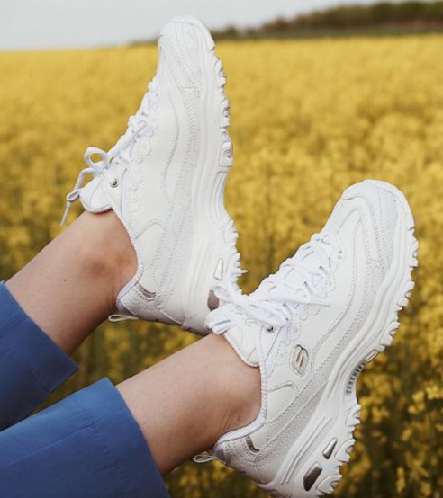

SKECHERS
WELCOME TO OUR
CSRNEWSLETTER
CSR OR CORPORATE SOCIAL RESPONSIBILITY IS THE SPRINGBOARD OF
THE GLOBAL MOVEMENT
THAT IS NOW CALLED SUSTAINABLE DEVELOPMENT
Here at Skechers China, we share the hopes for sustainable societies and the preservation of our planet's natural resources. Starting with this June 2020 issue, we will keep you abreast of the efforts being done by our company, the national government and many industries here and around the world, to contribute to the global movement for sustainable development.
THE AGE OF SUSTAINABLE DEVELOPMENT
In 2015, 193 member countries of the United Nations came together and laid down 17 sustainable development goals, also known as the SDG 2030. The goals are designed to advance and achieve sustainability by year 2030 in the areas of poverty alleviation, access to education, health and well-being, climate change, clean energy, environment protection, equality, peace and justice.
Since the beginning of the new millennium, and led by publicly listed companies through the ESG (environment, social and governance) reporting system, more and more businesses in China are joining the calls to participate in many different ways.
Skechers China's CEO Willie Tan released a directive to consolidate all past and ongoing CSR efforts and focus on impactful and beneficial programs for the employees, the community and the environment.
As the company embarks on the path to sustainability we will use this internal newsletter to keep all our employees updated about key CSR programs and also to educate and inspire each one of us to do our part in preserving our resources and enriching the well being of our societies starting within our offices, stores and facilities, our team members and colleagues, our customers, suppliers and partners, and our neighbors in our immediate communities. Together, small ripples can create bigger waves. Each one is important in this journey. Let's do our part.
The UN SDG 2030
IN THE NEWS:
SKECHERS ONE OF 9 FOOTWEAR
BRANDS THAT MAKE SUSTAINABLE
SNEAKERS FROM RECYCLED AND
RENEWABLE MATERIALS
Business Insider Amir Ismael
Apr 23, 2020, 12:04 AM The sneaker industry is bigger than ever, and its growth shows no signs of slowing. More than 23 billion pairs of sneakers are produced every year, but behind the great demand for footwear is an industry so wasteful it's almost beyond measure. Most of these new pairs use virgin plastic, rubber, and petroleum, producing alarming amounts of carbon dioxide. According to sneaker startup Nothing New, about 300 million pairs of shoes are thrown out every year and, on average, it takes 30-40 years for a pair to fully decompose in a landfill. In the past, most shoppers would have put little thought into exactly how the items they bought were made, but that is no longer the case all around. In addition to demanding trendsetting styles and groundbreaking innovations, the educated consumers of today expect products to be made responsibly.KEEP READING

HEALTH:
SKECHERS CHINA DONATES RMB 5 MILLION
IN CASH, SHOES AND JACKETS WORTH
ANOTHER 5 MILLION TO
FRONT LINE MEDICAL WORKERS IN WUHAN

On February 9, 2020, the company announced its donation of RMB 5 million in cash to the China Charity Federation for the purchase of medical supplies. In addition, Skechers China committed to donate comfortable shoes and warm down jackets worth RMB 5 million to the frontline medical workers in Wuhan.
The shoes and apparel part of the donation was successfully delivered on February 16 to the Common Center for Novel Coronavirus Prevention and Control in the Wuhan East Lake High-Tech Development Zone. From there, the necessary wearables were distributed to the hospitals in the East Lake High-Tech Development Zone and 5 hospitals in other region in Wuhan, involving 7,700 medical workers and volunteers.
ENVIRONMENT:
SKECHERS REDUCES PLASTICS IN PACKAGING MATERIALS BY 99%
94% of Shoeboxes and 100% of Tissue Paper and Foot Form Packaging Are Now Recyclable
MANHATTAN BEACH, Calif.--(BUSINESS WIRE)-- Global footwear brand Skechers USA, Inc. (NYSE:SKX) announced that since 2016, the Company has reduced its use of plastic in its footwear packaging by 85 percent to 10 percent of its foot forms, all of which is recyclable. The achievement is part of an aggressive strategy to increase the Company’s use of sustainable packaging worldwide: 99 percent of Skechers-branded shoeboxes meet FSC® standards for responsible sources, and 94 percent are recyclable*, along with all of the Company’s tissue paper packaging. All of Skechers’ packaging materials are also printed with soy- or water-based ink.
Included in Skechers’ global sustainability philosophy are its shipping methods. All of the Company’s master cartons from its factories are printed with soy- or water-based ink and are 100 percent recyclable, and at the distribution centers managing more than 90 percent of its business, its outbound shipping cartons are made with 96-100 percent recyclable materials and are 100 percent recyclable.
COMMUNITY:
SKECHERS CHINA JV PARTNER LUEN THAI ENTERPRISES FOCUSES ON EDUCATION AND POVERTY ALLEVIATION.
Luen Thai Enteprises, the joint venture partner of Skechers in China, has been a long time advocate of quality education through its TSL Foundation, named after the founder of the Luen Thai Intl. Group Dr. Tan Siu Lin. The 53 year old company has been a staunch benefactor of schools in Hong Kong and Quanzhou, Fujian, the birthplace of Dr. Tan.
In 2019, poverty alleviation became the main thrust of the foundation, working on several partnership programs in Quanzhou province.
In total, the foundation's donation in 2019 reached HK$ 7.7 million for schools and charity organisations in Hong Kong, and RMB 8.8 million for Quanzou schools and charity groups. (Source: Tan Family Business 2020 Report)
In 2019, poverty alleviation became the main thrust of the foundation, working on several partnership programs in Quanzhou province.
In total, the foundation's donation in 2019 reached HK$ 7.7 million for schools and charity organisations in Hong Kong, and RMB 8.8 million for Quanzou schools and charity groups. (Source: Tan Family Business 2020 Report)